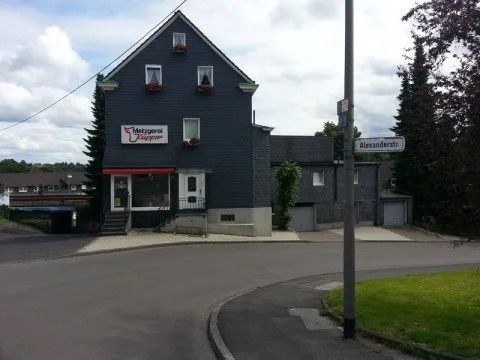

Willkommen!

Als moderner Fleischereibetrieb mit Tradition bieten wir Ihnen ausgesuchte Fleisch- und Wurstspezialitäten aus eigener Herstellung. Beilagen, Gewürze und vieles mehr stehen Ihnen bei Metzgerei Küpper außerdem zur Verfügung.
Auf den folgenden Seiten finden Sie nähere Informationen zu unserem Betrieb. Kommen Sie doch einfach mal vorbei und überzeugen Sie sich vor Ort von der hohen Qualität, der Frische und dem hervorragendem Geschmack unserer Produkte. Wir freuen uns auf Sie!
Qualität, Frische und Geschmack sind in unserem Fleischereibetrieb die wichtigsten Grundregeln. Mit großer Sorgfalt und höchsten Ansprüchen produzieren wir unsere Fleischprodukte. Wir legen bei unserem Sortiment großen Wert auf die Auswahl unserer Waren, auf Herstellungsort zum Beispiel das Bergische Land, sowie auf die Fütterung mit hofeigenem Futter und artgerechter Haltung der Tiere.
Täglich frisch produzierte Wurst aus unserer eigenen Herstellung, bieten wir Ihnen schon seit Jahrzehnten an. In den Jahren haben wir dafür gesorgt, dass unsere traditionellen Rezepte bei der Wurstverarbeitung immer erhalten und kaum geändert wurden. Wir verwenden keine Füllstoffe, Milchzucker, Getreideeiweiße oder Haltbarkeitsmittel.